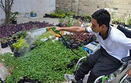

Fotografía
Me gusta mi entorno y ver lo que me ofrece, en la historia de cada persona, espacio y objeto quiero mostrar detalles únicos y capturar la escencia de algo verdaderamente especial.

He tomado fotografías de flores, espacios verdes, personas, eventos, presentaciones, paisajes y más
En las zonas verdes hay mucha diversidad y me gusta enmarcarla en mi lente, veo plantas y pequeños animales que son a veces los objetivos en las fotografías.

Retrato la discapacidad, he aprendido mucho de ella, el ser humano es muy complejo y espero que la imagen sea utilizada para visibilizar lo capaces que son.
También existe mucha diversidad en los paisajes de Colombia, capto imágenes de los rios, lagos, mares, cielo, montañas, fauna y la hermosa flora de nuestro país.